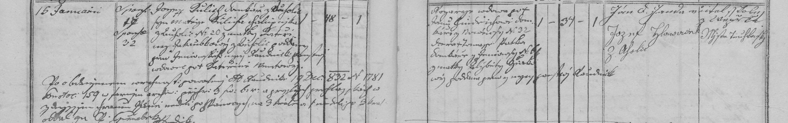

Text z matriky a překlad
Přepis originálu
Nová Ves (fara Vepřek), oddáni 15. 1. 1833. Ženich Josef Kulich, domkář z Ouholic (?), 48 let, vdovec po † Kateřině …ové (příjmení nejisté), syn Matěje Kulicha, chalupníka z Ouholic čp. 20, a Kateřiny roz. Jakoubkové z Ouholic; poddaný panství roudnického. Nevěsta Rozálie, vdova po † Janu Jindřichovi, domkáři z Nové Vsi čp. 32, dcera † Tomáše Jatla (?), domkáře z Nové Vsi čp. 6 (?), a Alžběty roz. Hůtové (?); 34 let (?), vdova; poddaná panství roudnického. Svědkové Jan …, Janda (?) z Vepřku a Josef Zlonický (?), mistr truhlářský z Ouholic. Ohlášky prominuty na základě povolení vikariátu v Roudnici z 19. 12. 1832 č. 1781. Řeší rozpor v rodném jménu: Rozálie se narodila jako Jatlová (?), „Jindřichová“ bylo jméno po prvním muži. Do domu čp. 32 se Josef přiženil.
Překlad
Nová Ves (fara Vepřek), oddáni 15. 1. 1833. Ženich Josef Kulich, domkář z Ouholic (?), 48 let, vdovec po † Kateřině …ové (příjmení nejisté), syn Matěje Kulicha, chalupníka z Ouholic čp. 20, a Kateřiny roz. Jakoubkové z Ouholic; poddaný panství roudnického. Nevěsta Rozálie, vdova po † Janu Jindřichovi, domkáři z Nové Vsi čp. 32, dcera † Tomáše Jatla (?), domkáře z Nové Vsi čp. 6 (?), a Alžběty roz. Hůtové (?); 34 let (?), vdova; poddaná panství roudnického. Svědkové Jan …, Janda (?) z Vepřku a Josef Zlonický (?), mistr truhlářský z Ouholic. Ohlášky prominuty na základě povolení vikariátu v Roudnici z 19. 12. 1832 č. 1781. Řeší rozpor v rodném jménu: Rozálie se narodila jako Jatlová (?), „Jindřichová“ bylo jméno po prvním muži. Do domu čp. 32 se Josef přiženil.